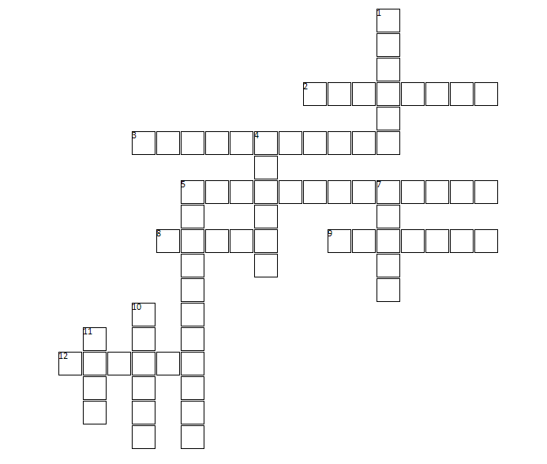
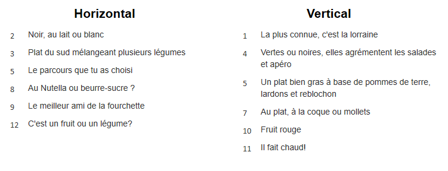

Déroulement :
Bienvenue dans les mots fléchés culinaires de petit chef ! Voici une grille vide avec des définitions, à toi de retrouver et compléter les cases.
 Pour finir :
Si tu as aimé, alors n’hésite pas à passer au niveau supérieur “moyen chef” et même après “grand chef!